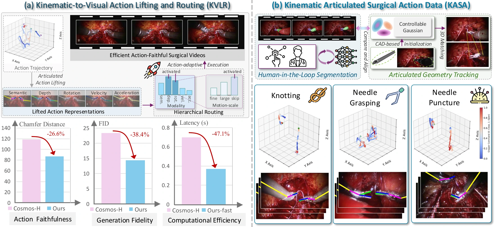
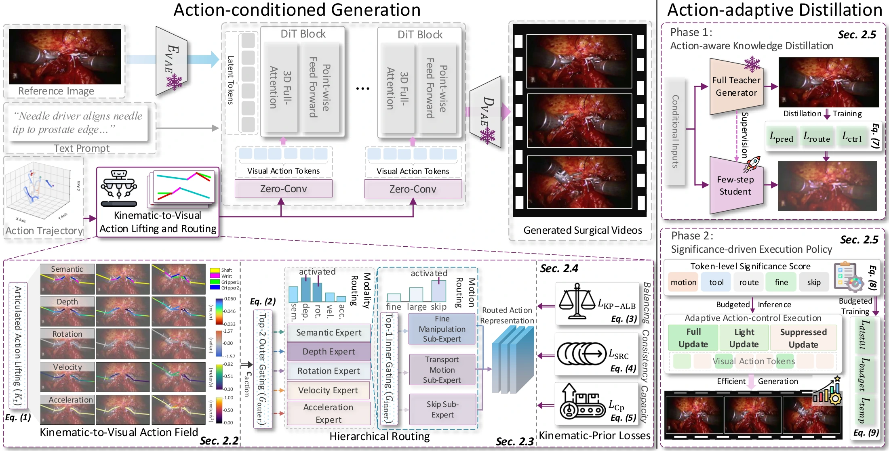
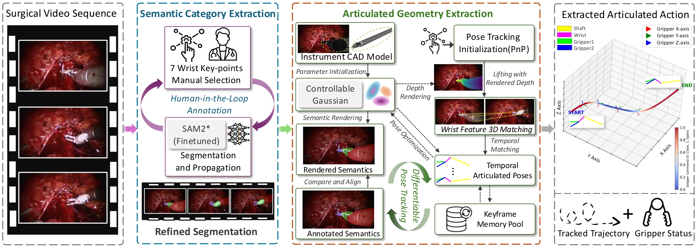
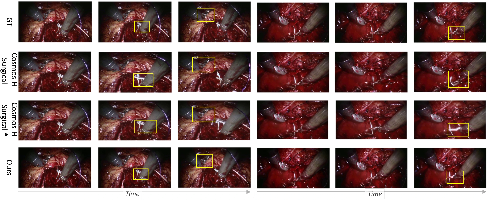

Representation
KVA-Field
A projected action field encodes where the tool is, how it is oriented, and how it is moving, using control signals that can be derived from articulated actions.
NeurIPS 2026
Action-conditioned surgical video generation
KVLR turns sparse surgical robot actions into image-aligned visual control fields, then routes conditioning across physical modalities and motion scales for faithful, realistic, and efficient video synthesis.

Abstract
Action-conditioned surgical video generation asks a model to synthesize realistic visual outcomes from desired robotic actions. The hard part is the representational gap: a compact articulated control vector must govern detailed tool appearance, occlusion, tissue interaction, and temporal motion in image space.
KVLR introduces a kinematic-to-visual lifting paradigm that converts articulated actions into five interpretable, pixel-aligned control modalities: semantics, depth, rotation, velocity, and acceleration. A hierarchical routing framework then selects useful modalities and motion scales, while kinematic-prior losses keep routing physically meaningful, temporally stable, and efficient.
Representation
A projected action field encodes where the tool is, how it is oriented, and how it is moving, using control signals that can be derived from articulated actions.
Routing
Modality routing selects physical cues, while motion-scale routing specializes computation for fine manipulation, transport motion, and stable regions.
Efficiency
Routing significance exposes conditional sparsity, enabling KVLR-fast to skip or reuse low-significance pathways without discarding action alignment.
Benchmark
A curated benchmark pairs real robotic surgical videos with articulated action annotations for knotting, needle grasping, and needle puncture.
Demo
The supplementary video highlights the central behavior of KVLR: generated frames remain visually plausible while following the supplied articulated surgical action trajectory.
Method

The shaft, wrist, and grippers are reconstructed as part-aware geometry and projected into the camera view.
Pixel-aligned channels encode part semantics, rendered depth, orientation, velocity, and acceleration.
Tier-1 routing chooses useful physical modalities; Tier-2 routing specializes updates by motion scale.
KVLR-fast combines few-step distillation, spatial adaptive execution, and temporal cache reuse for low-latency synthesis.
KASA Benchmark

Results
Full model in the architecture ablation, compared with 111.11 from raw-action direct conditioning.
Structured lifting plus two-tier routing improves over KVA-Field direct conditioning at 45.20.
KVLR-fast latency per 17-frame clip at 288 x 512, with 0.55 PFLOPs per clip.
| Method | CD | TI | FID | PSNR | Latency |
|---|---|---|---|---|---|
| Text-only baseline | 138.88 | 0.57 | 93.31 | 12.80 | 4.59 |
| Raw action direct condition | 111.11 | 0.69 | 79.56 | 15.08 | 4.61 |
| KVA-Field direct condition | 96.45 | 0.78 | 45.20 | 17.65 | 4.68 |
| KVA-Field with Tier-1 routing | 91.30 | 0.84 | 26.85 | 19.34 | 4.66 |
| KVA-Field with Tier-1 and Tier-2 routing | 86.89 | 0.89 | 14.37 | 20.82 | 4.64 |
| Method | Latency | FLOPs | CD | FID |
|---|---|---|---|---|
| Teacher, 50 steps | 4.64 | 6.94 | 86.89 | 14.37 |
| Generic distillation | 0.52 | 0.78 | 98.45 | 19.82 |
| Action-aware student | 0.52 | 0.78 | 87.50 | 15.60 |
| Spatial adaptive execution | 0.42 | 0.63 | 88.65 | 16.55 |
| Temporal cache, final efficient | 0.37 | 0.55 | 89.87 | 17.67 |
Visual Evidence

Resources
Citation
@article{li2026articulated,
title={From Articulated Kinematics to Routed Visual Control for Action-Conditioned Surgical Video Generation},
author={Li, Bohan and Yang, Shuojue and Peng, Baorui and Guo, Xianda and Zhang, Erli and Tao, Youqi and Duan, Junfeng and Xu, Daguang and Dou, Qi and Jin, Xin and others},
journal={arXiv preprint arXiv:2605.08712},
year={2026}
}